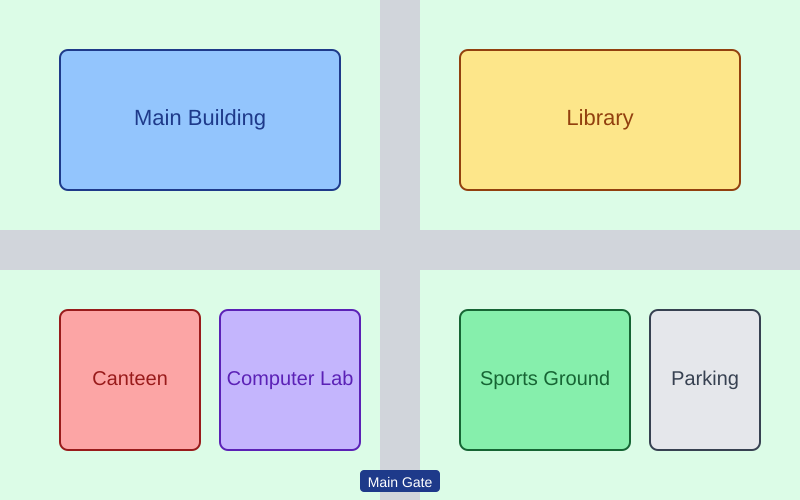

Campus Map
See where items were lost or found. Hover over a pin to see the item, click it to open the details.
Lost Found Returned

The map image is a temporary placeholder and will be replaced with the real campus map.
See where items were lost or found. Hover over a pin to see the item, click it to open the details.
Lost Found Returned

The map image is a temporary placeholder and will be replaced with the real campus map.